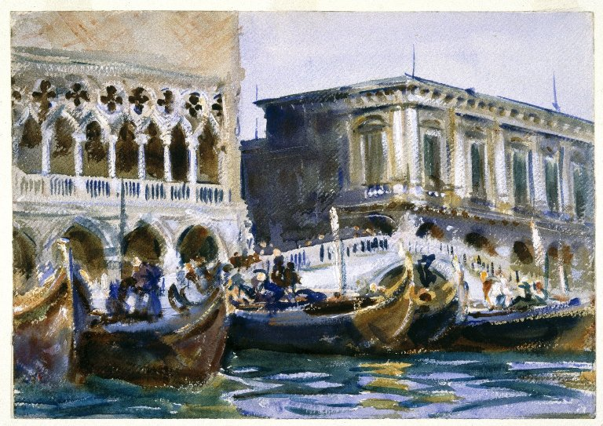

<head>
<meta charset="UTF-8" />
<meta name="keywords" content="drawing, painting" />
<meta name="description" content="drawings by Sunjy" />
<title>Sunjy</title>
<link rel="shortcut icon" type="image/x-icon" href="../../mImages/mCommon/favicon.ico" media="screen" />
<link rel="stylesheet" type="text/css" href="../../mCsses/mCommon/mCssA.css" />
<link rel="stylesheet" type="text/css" href="../../mCsses/mCommon/mCssB.css" />
<link rel="stylesheet" type="text/css" href="../../mCsses/mCommon/mCssC.css" />
<link rel="stylesheet" type="text/css" href="../../mCsses/mCommon/mCssD.css" />
<link rel="stylesheet" type="text/css" href="../../mCsses/mContent/mCssA.css" />
<link rel="stylesheet" type="text/css" href="../../mCsses/mContent/mCssB.css" />
<link rel="stylesheet" type="text/css" href="../../mCsses/mContent/mCssC.css" />
<link rel="stylesheet" type="text/css" href="../../mCsses/mContent/mCssD.css" />
</head>
<script type="text/javascript" src="../../mScripts/mContent/mContentAA.js" /></script>
<script type="text/javascript" src="../../mScripts/mContent/mContentAB.js" /></script>
<script type="text/javascript" src="../../mScripts/mContent/mContentAC.js" /></script>
<script type="text/javascript" src="../../mScripts/mContent/mContentAD.js" /></script>
<script type="text/javascript"></script> 
<script type="text/javascript">
document.write('<div class="mImgAbsolute"></div>');
/*
document.write('<p class="mFontSizeBColor" />From a white paper...</p>');
document.write('<table class="center"><tr><td>');
document.write('');
document.write('</td></tr></table>');
*/
</script>


<script type="text/javascript">
document.write('<p class="mFontSizeBColor" />La Riva</p>');
document.write('<p class="mFontSizeSColor" />“La Riva” by John Singer Sargent. John Singer Sargent created hundreds of watercolors of Venice, and they are especially notable when done from the perspective of a gondola as this depiction has been made.<br><br>His colors were vivid and conveyed the feeling of a dream. During Sargent’s long career, every destination offered visual stimulation and treasure. Even on his holidays and travels, he painted with feverish intensity, often painting from morning until night.<br><br>La Riva captures the spirit of Venice with Doge’s Palace on the left and the Palazzo Delle Prigionii on the right connect with the Ponte della Paglia bridge.<br><br>The gondolas dominate the foreground with Sargent’s perspective is from a gondola on the Grand Canal. Venice has a rich and diverse architectural style, the most prominent of which is the Gothic style.<br><br>Venetian Gothic architecture is a term given to a Venetian building style combining the Gothic lancet arch with the curved ogee arch, due to Byzantine and Ottoman influences. The city also has several Renaissance and Baroque buildings.<br></p>');
document.write('<table class="center" /><tr><td>');
document.write('<br>His colors were vivid and conveyed the feeling of a dream. During Sargent’s long career, every destination offered visual stimulation and treasure. Even on his holidays and travels, he painted with feverish intensity, often painting from morning until night.<br><br>La Riva captures the spirit of Venice with Doge’s Palace on the left and the Palazzo Delle Prigionii on the right connect with the Ponte della Paglia bridge.<br><br>The gondolas dominate the foreground with Sargent’s perspective is from a gondola on the Grand Canal. Venice has a rich and diverse architectural style, the most prominent of which is the Gothic style.<br><br>Venetian Gothic architecture is a term given to a Venetian building style combining the Gothic lancet arch with the curved ogee arch, due to Byzantine and Ottoman influences. The city also has several Renaissance and Baroque buildings.<br>" />');
document.write('</td></tr></table>');
</script>


